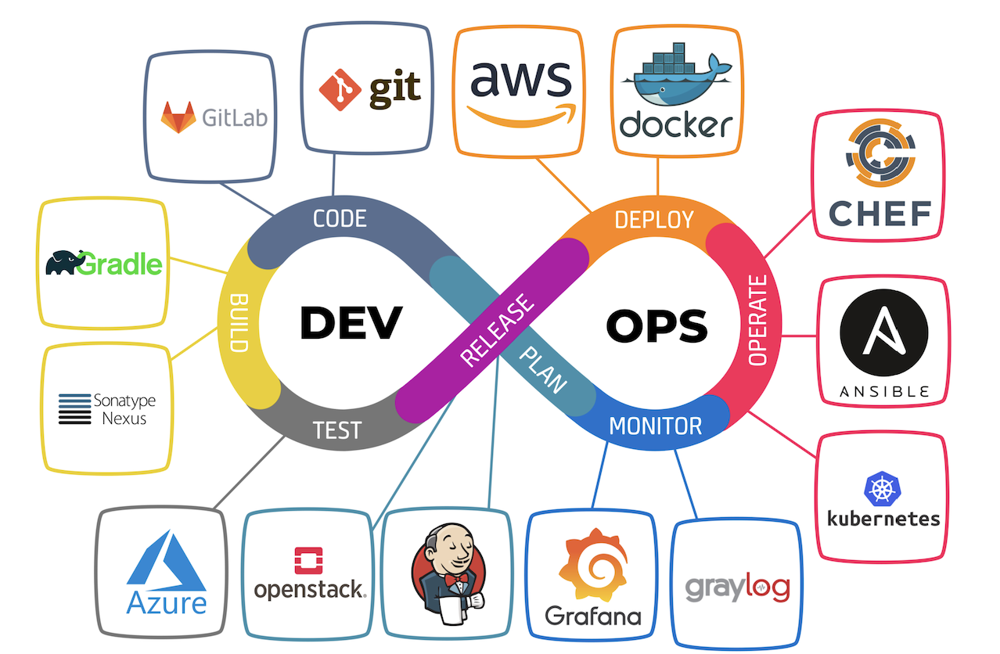

DevOps (Development + Operations) ühendab arenduse ja IT operatsioonide meeskonnad. Eesmärk on kiirelt arendada, testida ja kiiresti jõuda tarkvara valmimiseni. DevOps soodustab pidevat integreerimist ja pidevat kohaletoimetamist (CI/CD).
Plan: Planeerimine ja eesmärkide määramine. Develop: mis keskendub pidevale koodide kirjutamisele ja testimisele. Build: Automatiseeritud ehitusprotsessid. Test: Automatiseeritud testimine. Deploy: Automatiseeritud versioonihaldus ja kohaletoimetamine. Operate: Hooldus ja operatiivtoimingud. Monitor: Seire, analüüs ja täiendamine.
Tihe koostöö arendajate ja operatsioonide vahel. Kiire arengutsükkel ja kiire tagasiside. Automatiseeritud meetodid võimaldavad kiiret arengut ja kiireid muudatusi.
Suure organisatsiooni puhul võib olla keeruline kohandada. Palju rohkem tuleb sisse investeerida võrreldes teiste arendus mudelitega ja tarkvara automatiseerimine võib minna kulukaks.
